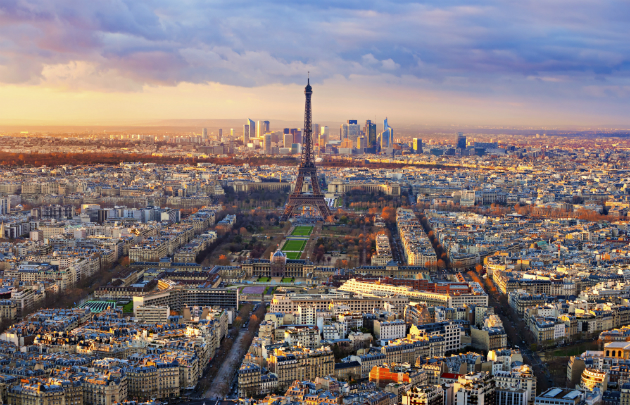

Народився 02.01.2002 року і місті Луцьк, Волинська область
З 2006-го по 2019-й навчався у загальноосвітній школі I-III ступенів №1 м. Луцьк. У 2019 вступив на перший курс КПІ, на спеціальність "Інженерія програмного забезпечення"
Найбільш вподобане місто у якому я був це Париж. Це місто насамперед захоплює своєю атмосферою, історією, архітектурою та красою. Париж можна назвати мрією для туриста, адже в ньому можна відвідати багато історичних пам'яток, виставок чи просто прогулятись красивими вулицями столиці Франції.
